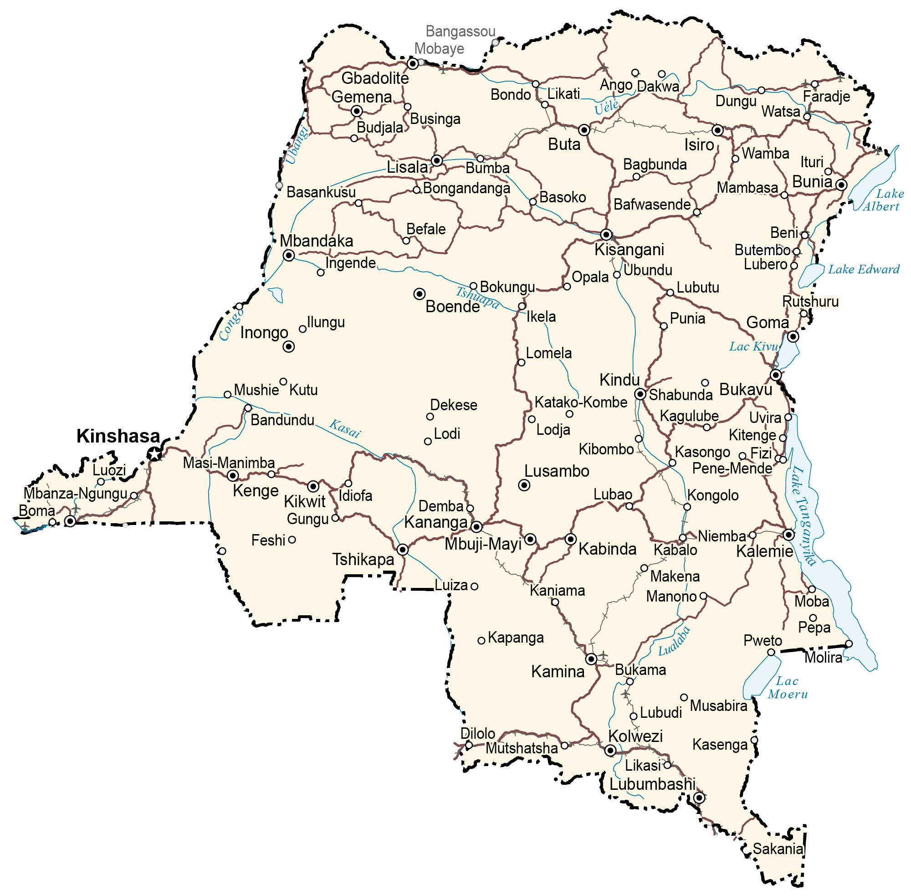

The Democratic Republic of Congo (DR Congo) is a country in Central Africa. Previously, DR Congo was known as Zaire until it changed in 1997. At 2,345,409 square kilometers (905,567 sq mi) in size, it’s the second-largest in all of Africa (after Algeria) and is the 11th largest in the world.
it’s the 4th-most populous country in Africa (after Nigeria, Ethiopia, and Egypt) and the 15th-most populous country in the world. It borders 9 other countries including Congo, Central Africa Republic, South Sudan, Uganda, Rwanda, Burundi, Tanzania, Zambia, and Angola. Kinshasa is the capital and the largest city of the Democratic Republic of the Congo.
Go back home